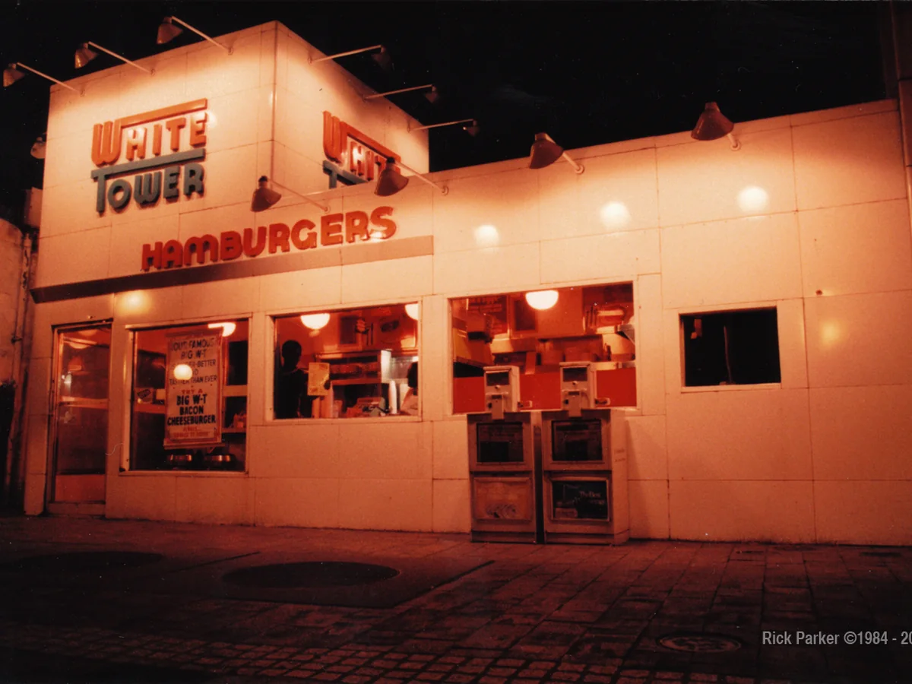

Closure timeline
Dashboard
Collection overview
MongoDB aggregation results summarize the restaurant documents currently stored in the database.

Live database metrics
Database at a glance
Values update whenever the MongoDB collection changes.
Aggregation
Archive insight
Loading collection insight…
The database is being analyzed.
Largest chain at its peak—